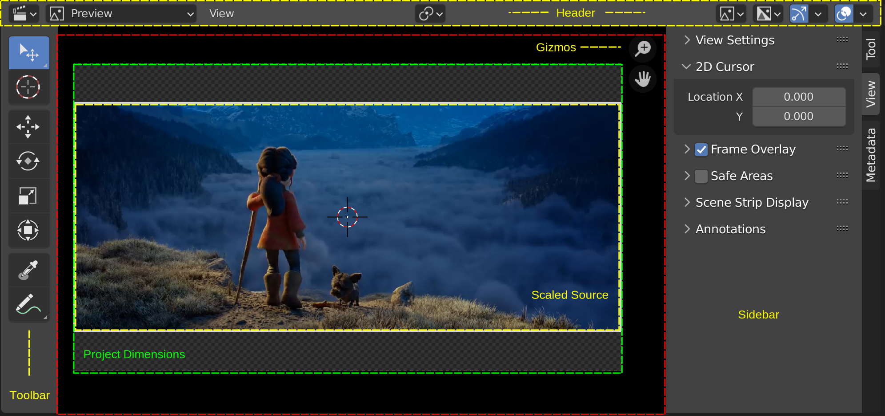

1.2. Preview¶
Preview には、Sequencer と同様に 2つの領域が含まれています (図1 を参照)。Headerは黄色の輪郭で表示され、その下に黒いPreviewウィンドウ(赤い輪郭) が表示されます。この Preview ウィンドウには固定寸法はありません。ズームインしたり、無限に移動したりできます。ただし、図 1 では、市松模様の領域 (緑色の枠線) が表示されます。この領域にはプロジェクトの寸法のサイズがあります。たとえば、図 1 では 1920 x 1080 ピクセルです。ただし、ソース ストリップは別の解像度で拡大縮小できるため、黄色の輪郭はソース ストリップが占める領域を示しています。ご覧のとおり、オープン ムービー「Spring」はプロジェクトとは解像度が異なり、画像の上下にレターボックスが追加されています。
Sequencer の例とは対照的に、図1 ではToolbarとSidebarの両方が展開されています。ただし、Gizmo は Preview に固有のものです。

図1: VSEのPreviewウィンドウ¶
Preview は、Sequencerタイムラインのレンダリング結果を表示するために使用されます。 これは、特定のチャネル、オーバーレイ、または画像アナライザー (スコープ) からの出力を表示するようにさらに構成できます。 NumpadPlus でズームイン、NumpadMinus でズームアウトすることでビューを調整できます。